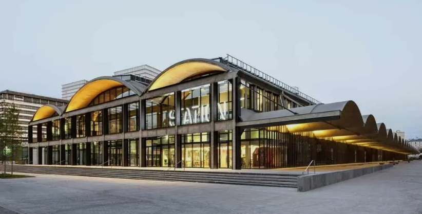

Projets
Voici une sélection de projets réalisés en formation et en stage, illustrant les compétences du Bloc 1.
Projet LLD – Acknowledge
Qu’est-ce que le LLD ?
Le LLD (Low-Level Design) est un document technique permettant de représenter précisément l’architecture réseau d’une entreprise. Il détaille les équipements, les VLAN, les adresses IP, les liens physiques, les services et les règles de sécurité.
Contexte
Projet réalisé durant mon stage chez Acknowledge. Objectif : cartographier l’intégralité du réseau interne, vérifier les prises RJ45, documenter et produire un schéma réseau professionnel.
Architecture réseau (LLD)
Voici un exemple de représentation du réseau (schéma simplifié) :

- Switch principal + switches secondaires
- VLAN utilisateurs / serveurs / invités
- Plan d’adressage IP
- Brassage RJ45 vérifié et corrigé
- Documentation complète de l’infrastructure
Actions réalisées
- Repérage de toutes les prises RJ45
- Analyse des baies de brassage
- Création du schéma LLD complet
- Documentation
Projet AP – Station F (Infrastructure réseau)

Qu’est-ce que Station F ?
Station F est le plus grand incubateur de startups au monde, situé à Paris.
Contexte
Projet sur le site de Lyon : mise en place d’une infrastructure réseau complète.
Actions réalisées
- Configuration du switch cœur : VLAN, SVI, STP, LACP
- Supervision via CheckMK
- Logs via Kibana
- Comptes SSH nominatifs
- Tests de connectivité
Lab individuel – VM & Serveurs
Les détails techniques de chaque projet sont présentés lors de l’oral.